전자계산기조직응용기사 (2015-08-16 기출문제)
1과목: 전자계산기 프로그래밍
1. 객체지향 시스템에서 데이터와 데이터를 처리하는 함수를 하나로 묶는 것을 의미하는 것은?
- Information hiding
- Inheritance
- Encapsulation
- Polymorphism
(정답률: 78%)

2. C 언어에서 문자형 자료 선언시 사용하는 것은?
- double
- float
- char
- int
(정답률: 84%)
3. 서브루틴에서 자신을 호출한 곳으로 복귀시키는 어셈블리어 명령은?
- RET
- CALL
- LOOP
- NOP
(정답률: 63%)
4. 객체지향 시스템에서 전통적 시스템의 함수 또는 프로시저에 해당하는 연산 기능을 무엇이라고 하는가?
- Message
- Method
- Module
- Package
(정답률: 76%)
5. 시스템이 알고 있는 특수한 기능을 수행하도록 이미 용도가 정해져 있는 단어로써, 프로그래머가 변수 이름이나 다른 목적으로 사용할 수 없는 핵심어를 무엇이라고 하는가?
- Reserved Word
- Constant
- Variable
- Array
(정답률: 84%)
6. 프로그래밍 언어의 해독 순서로 옳은 것은?
- 컴파일러 → 로더 → 링커
- 링커 → 로더 → 컴파일러
- 로더 → 컴파일러 → 링커
- 컴파일러 → 링커 → 로더
(정답률: 77%)
7. 객체지향 기법에서 캡슐화에 대한 설명으로 옳지 않은 것은?
- 결합도가 높아진다.
- 응집도가 향상된다.
- 재사용이 용이하다.
- 인터페이스를 단순화 시킬 수 있다.
(정답률: 69%)
8. 기계어에 대한 설명으로 옳지 않은 것은?
- 기계마다 언어가 다르며 호환성이 없다.
- 프로그램의 실행 속도가 빠르다.
- 2진수를 사용하여 데이터를 표현한다.
- 사람 중심의 언어로서 유지보수가 용이하다.
(정답률: 79%)
9. BNP를 이용하여 그 대상을 근(Root)으로 하고, 단말노드들을 왼쪽에서 오른쪽으로 나열하여 작성하는 트리로서, 작성된 표현식이 BNF의 정의에 의해 바르게 작성되었는지를 확인하기 위해 만든 트리를 무엇이라고 하는가?
- 구조 트리
- 분석 트리
- 파스 트리
- 구문 트리
(정답률: 77%)
10. 자신의 모듈에서 정의한 것을 다른 모듈에서 사용할 수 있도록 해주는 어셈블리어 명령은?
- ASSUME
- PUBLIC
- EXTERN
- EJECT
(정답률: 61%)
11. 프로그램 내에서 양쪽 오퍼랜드에 기억된 내용을 바꾸어야 할 때 사용하는 어셈블리어 명령은?
- XCHG
- EJECT
- INC
- DEC
(정답률: 79%)
12. C 언어에서 지정된 파일로부터 한 문자씩 읽어들이는 파일처리 함수는?
- fopen()
- fscanf()
- fgetc()
- fgets()
(정답률: 67%)
13. 어셈블리어에서 어떤 기호적 이름에 상수 값을 할당하는 명령은?
- ASSUME
- ORG
- EQU
- EVEN
(정답률: 79%)
14. 원시프로그램을 번역할 때 어셈블러에게 요구되는 동작을 지시하는 명령으로서 기계어로 번역되지 않는 명령어를 무엇이라고 하는가?
- 매크로 명령(macro instruction)
- 기계어 명령(machine instruction)
- 의사 명령(pesudo instruction)
- 오퍼랜드 명령(operand instruction)
(정답률: 78%)
15. 수명 시간동안 고정된 하나의 값과 이름을 가진 자료로서 프로그램이 작동하는 동안 값이 절대로 바뀌지 않는 것을 의미하는 것은?
- CONSTANT
- FUNCTION
- POINTER
- VARIABLE
(정답률: 72%)
16. C 언어에서 문자열 입력 함수는
- getchar()
- gets()
- putchar()
- puts()
(정답률: 66%)
17. C 언어의 기억 클래스(Storage Class) 종류에 해당하지 않는 것은?
- dynamic
- auto
- external
- register
(정답률: 70%)
18. 해당 내용을 각 페이지 상단에 출력토록 하는 어셈블리어 명령은?
- TITLE
- INC
- REP
- INT
(정답률: 81%)
19. C 언어에서 이스케이프 문자의 의미가 옳지 않은 것은?
- \b : blank
- \r : carriage return
- \n : new line
- \t : tab
(정답률: 72%)
20. 어셈블리어에 대한 설명으로 옳지 않은 것은?
- 어셈블리어로 작성된 원시 프로그램은 목적 프로그램을 생성하지 않아도 실행 가능하다.
- 어셈블리어의 기본 동작은 동일하지만 작성한 CPU마다 사용되는 어셈블리어가 다를 수 있다.
- 프로그램에 기호화된 명령 및 주소를 사용한다.
- 명령 기능을 쉽게 연상할 수 있는 기호를 기계어와 1:1로 대응시켜 코드화한 기호 언어이다.
(정답률: 75%)
2과목: 자료구조 및 데이터통신
21. IEEE에서 규정한 무선 LAN 규격은?
- IEEE 802.3
- IEEE 802.5
- IEEE 802.11
- IEEE 802.12
(정답률: 55%)
22. 협대역 ISDN에서 사용하는 D채널의 기능에 해당하는 것은?
- 회선 교환 방식을 위한 신호기능 정보의 전송
- 1536Kbps의 사용자 정보 전송
- 고속 팩시밀리, 화상 회의와 같은 고속정보 전송
- 패킷 교환방식에 의한 384Kbps 이하의 정보 전송
(정답률: 35%)
23. 디지털 데이터를 아날로그 신호로 변환시키는 것을 키잉(keying) 이라고 한다. 키잉의 세 가지 방식에 해당하지 않는 것은?
- ASK
- FSK
- QSK
- PSK
(정답률: 66%)
24. HDLC 프레임 형식 중 프레임의 시작과 끝을 나타내며 고유한 비트 패턴으로 표시되는 것은?
- 정보영역
- 제어영역
- 주소영역
- 플래그
(정답률: 65%)
25. 다음 설명에 해당되는 ARQ 방식은?
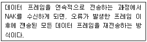
- Stop-and-Wait ARQ
- Selective-Repeat ARQ
- Go-back-N ARQ
- Sequence-Number ARQ
(정답률: 61%)
26. 내부라우팅 프로토콜의 일종으로 링크상태 알고리즘을 사용하는 대규모 네트워크에 적합한 것은?
- RIP(Routing Information Protocol)
- BGP(Border Gateway Protocol)
- OSPF(Open Shortest Path First)
- IDRP(Inter Domain Routing Protocol)
(정답률: 56%)
27. TCP/IP 관련 프로토콜 중 응용계층에 해당하지 않는 것은?
- ARP
- DNS
- SMTP
- HTTP
(정답률: 56%)
28. 동기식 시분할 다중화(Synchronous TDM)에 대한 설명으로 옳지 않은 것은?
- 전송시간을 일정한 간격의 시간 슬롯(time slot)으로 나누고, 이를 주기적으로 각 채널에 할당한다.
- 하나의 프레임은 일정한 수의 시간 슬롯(time slot)으로 구성된다.
- 송신단에서는 각 채널의 입력 데이터를 각각의 채널 버퍼에 저장하고, 이를 순차적으로 읽어낸다.
- 통계적 시분할 다중화(Synchronous TDM)방식 보다 전송 용량의 낭비가 적다.
(정답률: 61%)
29. OSI 7계층 중 장치와 전송매체 간의 인터페이스 특성 규정 및 전송 매체의 유형 규정, 전송로의 연결과 유지, 해제를 담당하는 계층은?
- 전송 계층
- 망 계층
- 데이터링크 계층
- 물리 계층
(정답률: 40%)
30. 다음 설명에 해당하는 LAN 토플로지는?
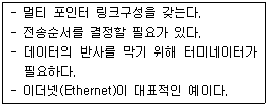
- 스타(Star)형
- 링(Ring)형
- 버스(Bus)형
- 그물(Mesh)형
(정답률: 60%)
31. 2진수 00001101 에 대한 1의 보수는?
- 11111010
- 11110111
- 11110011
- 11110010
(정답률: 71%)
32. DBMS의 필수기능으로 거리가 먼 것은?
- 정의 기능
- 독립 기능
- 조작 기능
- 제어 기능
(정답률: 75%)
33. 해싱(Hashing)과 가장 직접적인 관계에 있는 file은?
- Sequential file
- Indexed Sequential file
- Direct file
- Inverted file
(정답률: 52%)
34. 데이터베이스의 3단계 스키마에 해당하지 않는 것은?
- 내부 스키마
- 외부 스키마
- 개념 스키마
- 계층 스키마
(정답률: 71%)
35. 선형구조에 해당하지 않는 것은?
- 배열
- 스택
- 큐
- 그래프
(정답률: 73%)
36. 색인 순차(Indexed Sequential Access) 파일의 색인 구역에 해당하지 않는 것은?
- Track Index
- Cylinder Index
- Master Index
- Overflow Index
(정답률: 73%)
37. 트랜잭션의 특성에 해당하지 않는 것은?
- Consistency
- Isolation
- Durability
- Automation
(정답률: 61%)
38. 다음 트리플 전위 순회(Pre-Order Traversal)한 결과는?
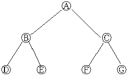
- A B D E C F G
- B D E A C F G
- D E B A F G C
- D E B F G C A
(정답률: 65%)
39. 자료구조 중 스택의 응용 분야로 거리가 먼 것은?
- 운영체제의 작업 스케줄링
- 부프로그램 호출시 복귀주소 저장
- 인터럽트 발생시 복귀주소 저장
- 후위표기법으로 표현된 산술식 연삭
(정답률: 64%)
40. 다음 자료에 대하여 버블 정렬을 이용하여 오름차순으로 정렬할 경우 1회전 후의 결과는?
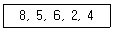
- 4, 2, 5, 6, 8
- 2, 4, 5, 6, 8
- 5, 2, 4, 6, 8
- 5, 6, 2, 4, 8
(정답률: 74%)
3과목: 전자계산기구조
41. 디지털 IC의 특성을 나타내는 중요한 비교 평가 요소가 아닌 것은?
- 전파 지연시간
- 전력 소모
- 팬 아웃(fan-out)
- 공급 전원전압
(정답률: 49%)
42. CPU 클록이 100MHz일 EO 인출 사이클(fetch cycle)에 소요되는 시간은?(단, 인출 사이클은 3개의 마이크로 명령어들로 구성된다.)
- 3ns
- 30ns
- 33ns
- 300ns
(정답률: 49%)
43. 다음 중 Associatinve 기억장치의 특징으로 옳은 것은?
- 일반적으로 DRAM보다 값이 싸다.
- 구조 및 동작이 간단하다.
- 명령어를 순서대로 기억시킨다.
- 저장된 정보에 대해서 주소보다 내용에 의해 검색한다.
(정답률: 56%)
44. 8진수 256과 542를 더한 결과는?
- 798⑻
- 1000⑻
- 1020⑻
- 1024⑻
(정답률: 59%)
45. 서로 다른 17개의 정보가 있다. 이 중에서 하나를 선택하려면 최소 몇 개의 비트(bit)가 필요한가?
- 3
- 4
- 5
- 7
(정답률: 59%)
46. 다음 중 채널 명령어(CCW)로 알 수 있는 내용이 아닌 것은?
- 명령 코드
- 데이터 전송속도
- 데이터 주소
- 플래그
(정답률: 52%)
47. 메모리에 관한 설명 중 옳지 않은 것은?
- RAM : 모든 번지에 대한 엑세스 시간이 같다.
- Non-Volatile 메모리 : 정전 시 내용을 상실한다.
- Non-destructive 메모리 : READ 시 내용이 상실되지 않는다.
- Mask ROM : Write 할 수 없다.
(정답률: 48%)
48. 명령어 파이프라인 단계 수가 4 이고, 파이프라인 클록(clock) 주파수가 1MHz일 때, 10개의 명령어들이 파이프라인 기법에서 실현될 경우 소요 시간으로 가장 적합한 것은?
- 4㎲
- 8㎲
- 13㎲
- 40㎲
(정답률: 44%)
49. 플립플롭에 대한 설명 중 틀린 것은?
- D 플립플롭의 D 입력에 1을 입력하면 출력은 1이 된다.
- T 플립플롭은 JK 플립플롭의 두 개의 입력을 하나로 묶은 플립플롭이다.
- JK 플립플롭의 입력 JK에 동시에 0이 입력되면 출력은 현 상태의 값이 된다.
- JK 플립플롭의 입력 JK에 동시에 1이 입력되면 출력은 1이 된다.
(정답률: 56%)
50. 어떤 제어 기억장치의 단어 길이가 32비트, 마이크로명령어 형식의 연산필드는 12비트 조건을 결정하는 플래그의 수는 4개일 때, 제어기억장치의 최대 용량은 약 얼마인가? (단, 분기필드는 필요하지 않다고 가정한다.)
- 1 MB
- 2 MB
- 4 MB
- 8 MB
(정답률: 20%)
51. Flynn이 제안한 병렬 컴퓨터 구조에서 다음 그림은 어떤 방식인가? (단, PU : processing Unit, LM : Local Memory, DS : Data Stream이다.)
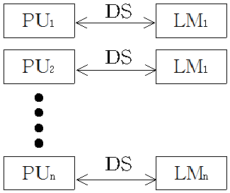
- SISD
- SIMD
- MISD
- MIMD
(정답률: 39%)
52. 버스 사용 우선순위를 계속 변경시키는 가변 우선순위 방식의 알고리즘이 아닌 것은?(문제 오류로 실제 시험장에서는 모두 정답 처리 되었습니다. 여기서는 1번을 누르면 정답 처리 됩니다.)
- 회전 우선순위(Rotating priority)
- 선택 우선순위(Select priority)
- 동등 우선순위(Equal priority)
- 최소-최근 사용 (Least-recently used)
(정답률: 12%)
53. SSD(Solid State Druve)에서 하나의 셀에 3비트의 정보를 저장하는 방식은?
- ALC
- MLC
- SLC
- TLC
(정답률: 54%)
54. 4×2 RAM을 이용하여 16×4 메모리를 구성하고자 할 경우에 필요한 4×2 RAM의 수는?
- 4개
- 8개
- 16개
- 32개
(정답률: 61%)
55. 산술 이동(shift)의 경우 8비트로 구성된 레지스터 7번의 내용이 11011001 일 때 SRA 7, 3을 실행하고 난 후의 결과는? (단, SRA 7, 3은 레지스터 7번을 우측으로 산술 이동 3회 수행함을 뜻한다.)
- 11111101
- 00011011
- 11111011
- 01111011
(정답률: 41%)
56. IEEE754의 부동소수점 표현 방식에서 단일-정밀도 형식에 관한 설명으로 틀린 것은?
- 지수부는 8비트이다.
- 바이어스는 127이다.
- 가수는 23비트이다.
- 표현영역은 10-308 ∼ 10308
(정답률: 52%)
57. 컴퓨터의 중앙처리장치(CPU)는 4가지 단계를 반복적으로 거치면서 동작한다. 4가지 단계에 속하지 않는 것은?
- fetch cycle
- branch cycle
- interrupt cycle
- execute cycle
(정답률: 59%)
58. 한 단어가 25비트로 이루어지고 총32768개의 단어를 가진 기억장치가 있다. 이 기억장치를 사용하는 컴퓨터 시스템의 MBR(memory buffer register), MAB(memory adress register), PC(program counter)에 필요한 각각의 비트 수는?
- 15, 15, 25
- 25, 15, 25
- 25, 25, 15
- 25, 15, 15
(정답률: 42%)
59. 주기억장치로부터 캐시 메모리로 데이터를 전송하는 매핑 프로세스 방법이 아닌 것은?
- associative mapping
- direct mapping
- set-associative mapping
- virtual mapping
(정답률: 49%)
60. 부호를 포함하여 4비트 크기를 갖는 수를 2의 보수 형식으로 표현할 때 가장 작은 수와 가장 큰 수는 각각 얼마인가?
- 0, +15
- -8, +8
- -7, +7
- -8, +7
(정답률: 56%)
4과목: 운영체제
61. 4개의 페이지를 수용할 수 있는 주기억장치가 있으며, 초기에는 모두 비어 있다고 가정한다. 다음의 순서로 페이지 참조가 발생할 때, LRU페이지 교체 알고리즘을 사용할 경우 몇 번의 페이지 결함이 발생하는가?
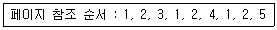
- 5회
- 6회
- 7회
- 8회
(정답률: 46%)
62. 분산 처리 운영체제 시스템의 구축 목적으로 거리가 먼 것은?
- 자원 공유의 용이성
- 연산 속도 향상
- 보안성 향상
- 신뢰성 향상
(정답률: 57%)
63. UNIX의 쉘(Shell)에 관한 설명으로 옳지 않은 것은?
- 명령어 해석기이다.
- 시스템과 사용자 간의 인터페이스를 담당한다.
- 여러 종류의 쉘이 있다.
- 프로세스, 기억장치, 입출력 관리를 수행한다.
(정답률: 56%)
64. 은행원 알고리즘은 교착상태 해결 방법 중 어떤 기법에 해당하는가?
- Prevention
- Recovery
- Avoidance
- Detection
(정답률: 66%)
65. FIFO 스케줄링에서 3개의 작업 도착시간과 CPU 사용시간(burst time)이 다음 표와 같다. 이 때 모든 작업들의 평균 반환시간(turn around time)은? (단, 소수점 이하는 반올림 처리한다.)
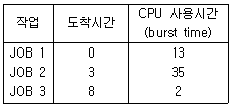
- 16
- 17
- 20
- 33
(정답률: 47%)
66. 다음 설명에 해당하는 디렉토리는?
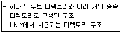
- 1단계 디렉토리
- 2단계 디렉토리
- 비순환 그래프 디렉토리
- 트리 디렉토리
(정답률: 61%)
67. UNIX 파일시스템에서 파일 소유자의 사용자 번호 및 그룹 번호, 파일의 보호 권한, 파일 타입, 생성 시기, 파일 링크 수 등 각 파일이나 디렉토리에 대한 모든 정보를 저장하고 있는 블록은?
- 부트 블록
- I-node 블록
- 슈퍼 블록
- 데이터 블록
(정답률: 50%)
68. 운영체제의 성능평가 요인 중 다음 설명에 해당 하는 것은?
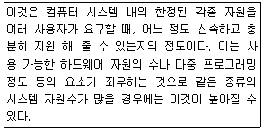
- Availability
- Throughout
- Turn around Time
- Reliability
(정답률: 61%)
69. 보안 매커니즘 중 합법적인 사용자에게 유형 혹은 무형의 자원을 사용하도록 허용할 것인지를 확인하는 제반 행위로서, 대표적 방법으로는 패스워드, 인증용 카드, 지문 검사 등을 사용하는 것은?
- Cryptography
- Authentication
- Digital Signature
- Threat Monitoring
(정답률: 59%)
70. 운영체제의 운영 기법 중 동시에 프로그램을 수행할 수 있는 CPU를 두 개 이상 두고 각각 그 업무를 분담하여 처리할 수 있는 방식을 의미하는 것은?
- 시분할 처리 시스템(Time-Sharing System)
- 실시간 처리 시스템(Real-Time System)
- 다중 처리 시스템(Multi-Processing System)
- 다중 프로그래밍 시스템(Multi-Programming System)
(정답률: 67%)
71. HRN 방식으로 스케줄링 할 경우, 입력된 작업이 다음과 같을 때 우선 순위가 가장 높은 것은?
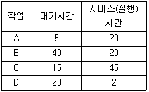
- A
- B
- C
- D
(정답률: 60%)
72. 분산 운영체제의 구조 중 완전 연결(Fully Connection)에 대한 설명으로 옳지 않은 것은?
- 하나의 링크가 고장 나면 모든 통신이 단절된다.
- 모든 사이트는 시스템 안의 다른 모든 사이트와 직접 연결된다.
- 사이트 설치시 소요되는 기본 비용은 많이 든다.
- 사이트 간의 연결은 여러 회신이 존재하므로 신뢰성이 높다.
(정답률: 57%)
73. 페이지 교체 기법 중 최근에 사용하지 않은 페이지를 교체하는 기법으로 각 페이지마다 참조 비트와 변형 비트가 사용되는 것은?
- NUR
- FIFO
- SCR
- OPT
(정답률: 61%)
74. 운영체제의 목적과 거리가 먼 것은?
- 신뢰도 향상
- 처리량 향상
- 응답시간 단축
- 반환시간 증대
(정답률: 64%)
75. 보안 유지 기법 중 하드웨어나 운영체제에 내장된 보안 기능을 이용하여 프로그램의 신뢰성 있는 운영과 데이터의 무결성 보장을 기하는 기법은?
- 외부 보안
- 운용 보안
- 사용자 인터페이스 보안
- 내부 보안
(정답률: 59%)
76. UNIX의 특징이 아닌 것은?
- 트리 구조의 파일 시스템을 갖는다.
- Multi-User는 지원하지만 Multi-Tasking은 지원하지 않는다.
- 대화식 운영체제이다.
- 이식성이 높으며, 장치, 프로세스 간의 호환성이 높다.
(정답률: 68%)
77. 주기억장치 배치 전략 기법으로 최적 적합 방법을 사용할 경우, 다음과 같은 기억장소 리스트에서 10K크기의 작업은 어느 기억공간에 할당되는가? (단, 탐색은 위에서 아래로 한다.)
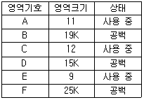
- B
- C
- D
- F
(정답률: 66%)
78. 시간적 구역성(Temporal locality)과 거리가 먼 것은?
- 루프
- 서브루틴
- 배열 순회
- 스택
(정답률: 48%)
79. 128개의 CPU로 구성된 하이퍼큐브에서 각 CPU는 몇 개의 연결점을 갖는가?
- 6
- 7
- 8
- 10
(정답률: 53%)
80. 스레드(Thread)에 대한 설명으로 옳지 않은 것은?
- 프로세스 내부에 포함되는 스레드는 공통적으로 접근 가능한 기억장치를 통해 효율적으로 통신한다.
- 다중 스레드 개념을 도입하면 자원의 중복 할당을 방지하고 훨씬 작은 자원만으로도 작업을 처리할 수 있다.
- 하나의 프로세스를 구성하고 있는 여러 스레드들은 공통적인 제어 흐름을 가지며, 각종 레지스터 및 스택 공간들을 모든 스레드들이 공유한다.
- 하나의 프로세스를 여러 개의 스레드로 생성하여 병행성을 증진시킬 수 있다.
(정답률: 43%)
5과목: 마이크로 전자계산기
81. 기억용량이 2Kbyte인 PROM의 경우 최소한 몇 개의 adress line 이 필요한가?
- 10
- 11
- 12
- 13
(정답률: 61%)
82. 컴퓨터 시스템에 예기치 않는 일이 발생하였을 때 그것을 제어 프로그램에 알려주는 것을 무엇이라고 하는가?
- PSW(Program State Word)
- Interrupt
- Mask
- Controlling
(정답률: 72%)
83. 마이크로프로세스(MPU)의 구성요소에 속하지 않는 것은?
- ALU
- CLOCK
- REGISTER
- PROGRAM COUNTER
(정답률: 52%)
84. 다음 설명 중 옳은 것은?
- DMA에 의한 자료 전송은 소프트웨어에 의해서 이루어진다.
- 프로그램 제어에 의한 입출력은 중앙처리장치의 효율을 증대시킨다.
- 메모리 맵에 의한 입출력 방법은 고속의 자료전송에 적합하다.
- 인터럽트에 의한 입출력은 프로그램 제어 방법보다 중앙처리 장치를 효과적으로 사용할 수 있다.
(정답률: 47%)
85. 주소선(Address line)이 16개이고, 데이터선(Data line)이 8개인 프로세서에서 주소선 1개가 추가될 때 프로세서의 총 용량은 얼마인가?
- 526 KB
- 128 KB
- 64 KB
- 32 KB
(정답률: 47%)
86. 3-state buffer로 된 레지스터의 1bit가 그림과 같고 1이 기억되어 있을 때, 다음 출력값이 옳게 표시 된 것은?
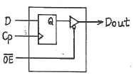
- (OE)' 가 High 일 때 dount은 1
- (OE)' 가 Hidh 일 때 dount은 ∅
- (OE)' 가 LOW 일 때 dount은 1
- (OE)' 가 LOW 일 때 dount은 floating
(정답률: 49%)
87. 다음 중 중앙처리장치 (CPU)에 가장 많이 의존하는 입ㆍ출력 방식은?
- 프로그램에 의한 입ㆍ출력
- 인터럽트에 의한 입ㆍ출력
- 데이터 채널에 의한 입ㆍ출력
- 입ㆍ출력 전용장치에 의한 입ㆍ출력
(정답률: 43%)
88. 중앙처리장치와 인터럽트를 요청할 수 있는 모든 장치의 인터페이스 사이에 장치번호를 필요로 하는 인터럽트 방식은?
- 폴링 방식
- 벡터 인터럽트 방식
- 데이지체인 방식
- 디코더 방식
(정답률: 48%)
89. 디코더(decoder)의 설명이 아닌 것은?
- 인코더와 반대 동작을 하는 것이 디코더이다.
- 신호의 조합을, 이 조합을 나타내는 하나의 신호로 번역하는 유닛이다.
- 2진법의 수를 해독하여 그에 해당하는 10진법의 수를 선택해 내는 회로를 2진-10진 디코더라 한다.
- 특정한 입력을 몇 개의 코드화된 신호의 조합으로 바꾸는 장치이다.
(정답률: 46%)
90. 프로그램 입ㆍ출력 동작에 대한 내용 중 옳지 않은 것은?
- 직접 I/O 또는 polled I/O 같은 데이터 전송이다.
- 마이크로프로세서에 의해 제어된다.
- 데이터 전송은 명령이나 입ㆍ출력 서브루틴에 의해 실행된다.
- 마이크로프로세서가 아닌 별도의 제어기에 의해 제어된다.
(정답률: 58%)
91. 제어논리가 마이크로프로그램 기억 장치인 읽기용 기억 장치(ROM)에 구성되어 있어, 여러 대규모 집적회로군이 이미 마이크로프로그램 되어 있는 것은?
- 가상 CPU
- 슈퍼 워크스테이션
- 슈퍼 VHS
- 쇼트키 쌍극형 마이크로컴퓨터 세트
(정답률: 58%)
92. 코루틴(Coroutine)에 관한 설명으로 옳지 않은 것은?
- 서브루틴을 일반화시킨 형태이다.
- Conway에 의해서 최초로 사용되었다.
- 호출과 호출 사이의 내부 상태 정보가 보존되어야 한다.
- 코루틴을 사용해서는 파라미터를 전달할 수 없다.
(정답률: 62%)
93. 명령을 해독하여 실행하여 완료할 때까지 필요한 CPU 내부 신호를 만들어 주는 기능을 하는 장치는?
- 연산장치
- 기억장치
- 제어장치
- 카운터장치
(정답률: 59%)
94. 다음 중에서 기억장치로부터 전송된 데이터를 일시적으로 저장하는 레지스터는
- MAR
- MBR
- ALU
- 채널
(정답률: 52%)
95. CPU의 클록 주파수가 2.5MHz이고, 한 개의 명령 사이클이 3개의 머신 사이클로 이루어져 실행되며, 각 머신 사이클은 명령어 인출 및 해독 시 4개의 머신 스테이트가 필요하고 실행시에는 각 6개씩의 머신 스테이트로 이루어진다면 한 개의 명령어를 실행하는데 걸리는 시간은?
- 0.4㎲
- 4㎲
- 25㎲
- 40㎲
(정답률: 41%)
96. isolated I/O 방식의 장점을 나타낸 것은?
- 입출력을 위해 일반 인스트럭션을 사용하므로 인스트럭션의 종류가 다양하다.
- 입출력 장치가 기억장치의 주소를 사용하므로 기억장치가 사용할 수 있는 주소가 줄어든다.
- 입출력이 언제 수행되는지를 알아보기가 쉽다.
- 입출력 포트의 개수를 크게 할 수 있다.
(정답률: 47%)
97. 반도체 메모리의 내부 구성 요소가 아닌 것은?
- 기억부
- 해독부
- 연산부
- 제어부
(정답률: 37%)
98. 마이크로컴퓨터의 병렬 입출력 인터페이스가 아닌 것은?
- PIO
- UART
- PPI
- PIA
(정답률: 66%)
99. 우선순위체제 인터럽트 방식에서의 우선순위 식별회로에서 우선순위가 가장 높은 인터럽트 요청신호는?
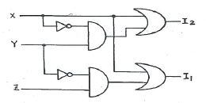
- X
- Y
- Z
- 구별할 수 없다.
(정답률: 66%)
100. 저속 장치에 연결되며, 다수의 입출력장치를 동시에 운영할 수 있는 채널은?
- selector channel
- interactive channel
- independent channel
- multiplexer channel
(정답률: 69%)